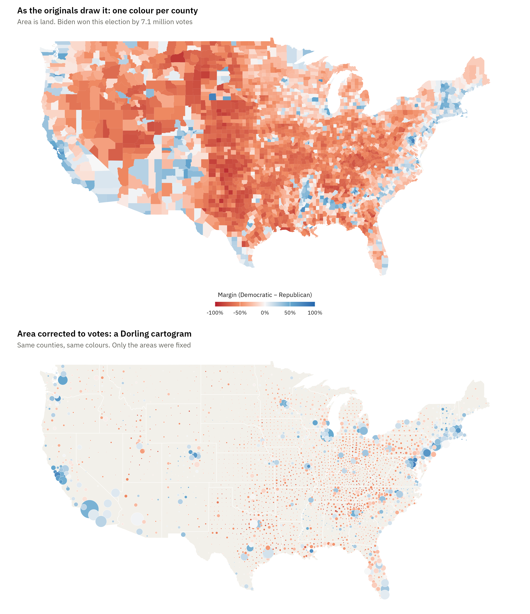

Show the R code
choropleth <- ggplot(county_xy, aes(long, lat, group = group, fill = margin)) +
geom_polygon(linewidth = 0) +
coord_quickmap() +
scale_fill_gradientn(colours = vote_cols, limits = c(-1, 1),
na.value = "#eeece5",
labels = scales::label_percent(),
name = "Margin (Democratic − Republican)",
guide = guide_colourbar(title.position = "top",
title.hjust = .5)) +
labs(title = "As the originals draw it: one colour per county",
subtitle = "Area is land. Biden won this election by 7.1 million votes") +
theme_void(base_family = dsvar_font()) +
theme(plot.title = element_text(face = "bold", size = 11, hjust = 0),
plot.subtitle = element_text(size = 9, colour = "#5a5a52", hjust = 0),
legend.position = "bottom",
legend.key.height = unit(6, "pt"), legend.key.width = unit(26, "pt"),
legend.title = element_text(size = 8), legend.text = element_text(size = 7),
plot.margin = margin(b = 14))
# The Dorling: every county becomes a circle at its centre, area = votes cast.
# A true contiguous cartogram deforms the borders instead; the circle version
# makes the same correction and is reachable with a geom you already know.
dorling <- ggplot(centroids, aes(long, lat)) +
geom_polygon(data = states, aes(long, lat, group = group),
fill = "#f2f0ea", colour = "white", linewidth = .2) +
geom_point(aes(size = total_votes, fill = margin), shape = 21,
colour = "white", stroke = .15) +
coord_quickmap() +
scale_size_area(max_size = 11, guide = "none") +
scale_fill_gradientn(colours = vote_cols, limits = c(-1, 1),
na.value = "grey80", guide = "none") +
labs(title = "Area corrected to votes: a Dorling cartogram",
subtitle = "Same counties, same colours. Only the areas were fixed") +
theme_void(base_family = dsvar_font()) +
theme(plot.title = element_text(face = "bold", size = 11, hjust = 0),
plot.subtitle = element_text(size = 9, colour = "#5a5a52", hjust = 0))
choropleth / dorling